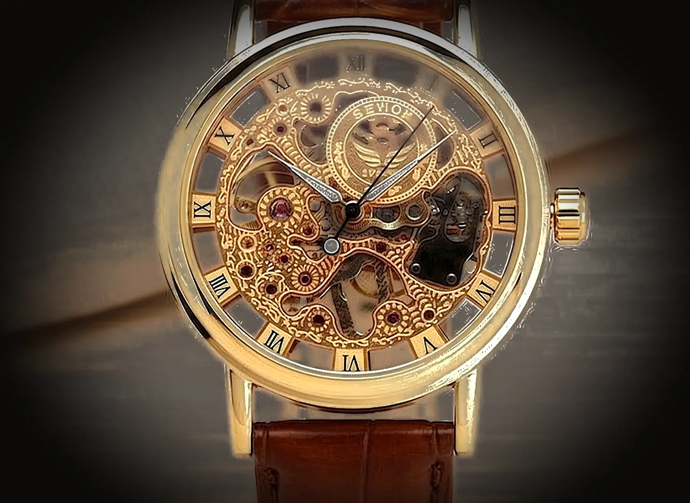
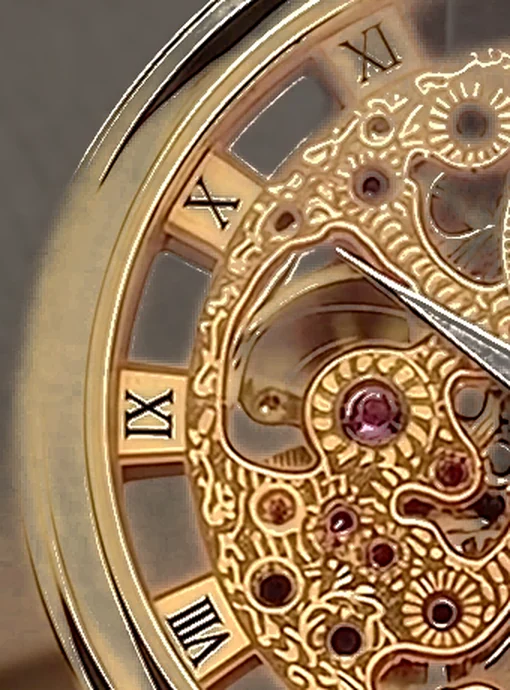
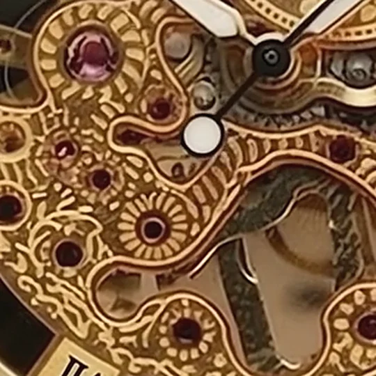
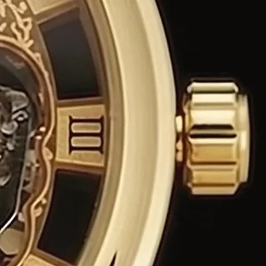

Crafted in darkness.
Most of what makes it work, you will never see. It was finished as if you would.

A watch, finished in the dark.
Two hundred and seventeen parts, held by nothing.
Then each one, back in its place.
Most of what makes it work, you will never see. It was finished as if you would.
Every edge was cut for the moment the light arrives.



Seven layers. Every one of them finished.
42 mm
Grade-5 titanium
72 h
Power reserve
0
Components
$48,000
Leave a name. We will write when it is time.